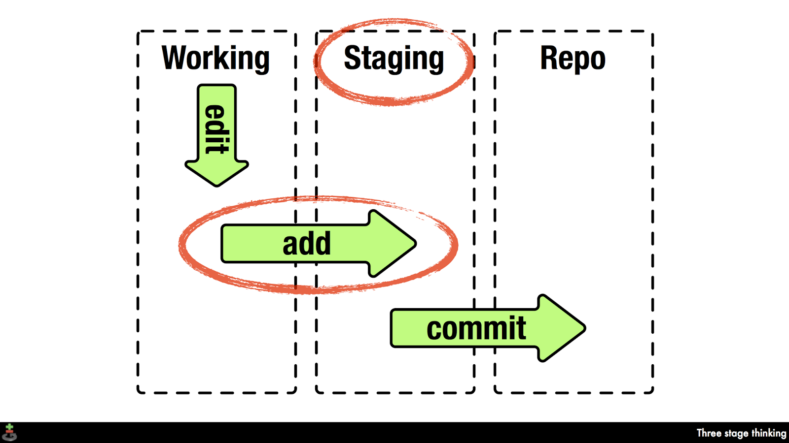
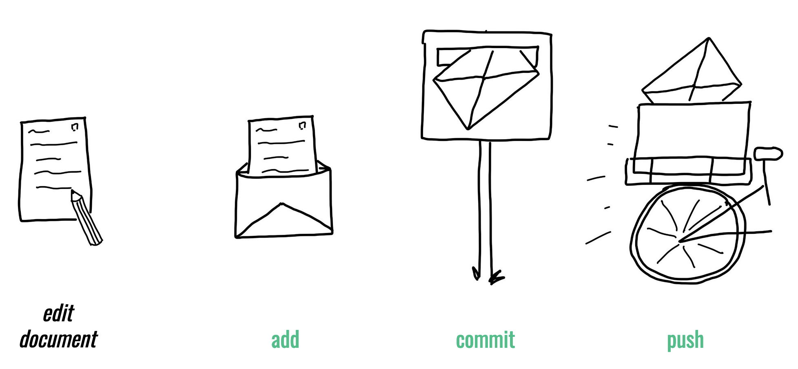
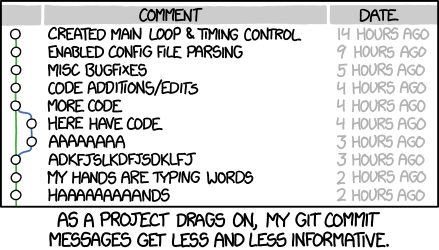

![]()
{kind=link}
| Command | Description |
|---|---|
pwd |
Displays the path of the current working directory |
cd <PATH> |
Changes the current working directory to <PATH> |
cd ~ |
Changes the current working directory to the user’s home directory |
cd .. |
Moves up one folder |
cd ../.. |
Moves up two folders |
clear |
Clears the contents of your command line window |
ls |
Lists files and folders in the current working directory |
ls <PATH> |
Lists files and folders in <PATH> |
ls -a |
Lists all files (including hidden files) in the current working directory |
ls -alh |
Lists all files in a long format that is easy to read for humans |
[Command] --help |
Displays all possible flags for a specific command (on Windows) |
man [Command] |
Displays all possible flags for a specific command (on macOS) |
mkdir <FOLDER> |
Creates a new folder called <FOLDER> |
mkdir <FOLDER1> <FOLDER2> |
Creates two separate folders called <FOLDER1> and <FOLDER2> |
touch <FILE> |
Creates a new empty file called <FILE> |
open <FILE> |
Opens the file called <FILE> (on macOS) |
start <FILE> |
Opens the file called <FILE> (on Windows) |
echo "example text" >> file.txt |
Writes “example text” into file.txt |
cat <FILE> |
Displays the content of <FILE> |
mv FILE.txt <FOLDER> |
Move FILE.txt into <FOLDER> |
mv <FOLDER_OLD> <FOLDER_NEW> |
Renames <FOLDER_OLD> to <FOLDER_NEW> |
ls -alh *.csv |
Uses a wildcard to list all .csv files in the current working directory |
rm -r <FOLDER> |
Removes the folder <FOLDER> |
history |
Display the command history of the current terminal session |
history > history.txt |
Saves the entire command history to a file named history.txt (overwrites existing content in history.txt) |
history >> history.txt |
Adds the entire command history to the end of the file named history.txt |
tree |
Displays a graphical representation of the directory structure |
wget <URL> |
Downloads a file from the specified |
Session 4: First steps with Git & Git Essentials
Track, organize and share your work: An introduction to Git for research
Course at Max Planck Institute for Human Development
Slides | Source


11:00
1 Last session
Last session: Basics of the command line & Git setup

Last session: Learning objectives
After the last session, you should now be able to answer the following questions / do the following:
Command line
💡 You can name the advantages of command-line interfaces for Git.
💡 You can navigate directories using absolute and relative paths.
💡 You can use shortcuts like the tilde or dots to navigate your file system.
💡 You can apply arguments and flags to customize command-line commands.
💡 You can use wildcards (*) for file selection.
💡 You can combine command-line commands.
Setup
💡 You know how to set up Git for the first time
💡 You have set up Git on your computer
💡 You understand the difference between the three Git configuration levels
💡 You know how to configure your username and email address in Git
💡 You have set up your preferred text editor when working with Git
💡 You can escape the command-line text editor Vim
Last session: Command line cheatsheet
Last session: Git setup cheatsheet
| Command | Description |
|---|---|
git config |
Get an overview of Git config commands |
git config --global user.name "user.name" |
Sets Git username |
git config --global user.email "user.email" |
Sets Git email address |
git config --global core.editor "editorname" |
Sets Git text editor |
git config --global init.defaultBranch main |
Sets default branch name to main |
git config --list |
Views set Git configurations |
Last session: recipes project
Command line
At the end of this session, you should have accomplished the following:
- You used the command line to create a folder on your computer called
recipes. - You used the command line to create a file called
recipes.txtinside therecipesfolder.
Please keep the recipes folder! We will continue to use it in the following sessions.
Setup
At the end of this session, you should have accomplished the following:
- You set up Git.
- You configured Git.
Please keep the recipes folder! We will continue to use it in the following sessions.
Common questions from last session
“How can I enable copy-paste in Git Bash?”
- Click on the Git Bash icon in the top-left corner.
- Choose Options.
- Go to Keys menu.
- Enable Copy and Paste (Ctrl/Shift + Ins) option.
- Click Apply and Save.
“How do I find the Users folder on Windows?”
- Use
~ - If
pwdis at/:you can still usecd C:
“The command line does not give feedback!”
- Yes, I know, I’m sorry …
- You need to check explicitly if the command had the desired effect.
- Example: After
mkdir recipes, uselsto check if the/recipesfolder was created.
2 This session: First steps with Git & Git Essentials
Learning objectives
💡 You can initialize a Git repository.
💡 You can check the status of a Git repository.
💡 You understand the difference between the staging area and a commit.
💡 You can stage and commit changes.
💡 You understand the difference between a commit message and a description.
💡 You know what good commits look like.
💡 You know how to explore the commit history.
💡 You can compare different commits.
💡 You know how to use and create a .gitignore file.
💡 You can discuss which files can (not) be tracked well with Git and why.
💡 You know how to track empty folders in Git repositories.
Reading
Tasks
In this session, you will work on the following tasks:
- Reading: Read the chapter(s) “First steps with Git” and “Git Essentials” in the Version Control Book.
- Implementation: Try out the commands in the chapter.
- Exercises: Work on the exercises for the
recipesproject.
As always:
- Try out the commands of this session and play around with them.
- Check whether you have achieved the learning objectives.
- Ask questions!
- Let’s git started!
recipes project
First steps with Git
At the end of this session, you should have accomplished the following:
- You set up Git.
- You initialized your
recipesfolder as a Git repository. - You committed your first file to the
recipesrepository.
Please keep the recipes folder! We will continue to use it in the following sessions.
Git Essentials
At the end of this session, you should have accomplished the following:
- Commit at least three changes in
recipes.txt. - Make at least one commit using
git commit --amend.- For example, add a a new entry without a title first, commit, then add a title and use
git commit --amendto add the title change to the same commit.
- For example, add a a new entry without a title first, commit, then add a title and use
- Create a
.gitignorefile.- Everyone: Create a random file that you want to ignore, for example
image.jpg. - All macOS users: Let your repository ignore
.DS_Store.
- Everyone: Create a random file that you want to ignore, for example
- 🚀 Optional: Commit
.gitkeepin an otherwise empty directory.
Please keep the recipes folder! We will continue to use it in the following sessions.
Cheatsheet
First steps with Git
| Command | Description |
|---|---|
git init |
Initializes a folder as a Git repository |
git status |
Shows Git tracking status of files in the repository |
git add |
Adds file(s) to the staging area |
git commit |
Commits staged files |
git commit -m "commit message" |
Commits staged files with a commit message |
Git essentials
| Command | Description |
|---|---|
git log |
Views past commits |
git diff |
Views made changes compared to the last commit |
git mv |
Renames or moves files and automatically stages the changes |
Exercises: First steps with Git
Note: There are several terms in these instructions that might be unfamiliar to you, such as “repository”, “stage”, or “commit.” Don’t worry - you will learn about these terms during this session.
Initialize a Git repository
- If needed, navigate to the project folder using the command line.
- Initialize a new Git repository in the project folder.
Add content and commit changes
- Open
recipes.txt(created in the command-line session) in a text editor. - Add a short recipe entry (a title and a short list of ingredients — use any favorite or an intriguing AI-generated one).
- Stage the file.
- Commit the changes with a descriptive commit message.
🚀 Optional: Commit at least three additional recipe entries in recipes.txt.
Exercises: Git Essentials
Amend a commit
- If needed, navigate to the project repository using the command line.
- Add a new recipe to
recipes.txtwithout a title, and commit the change. - Now add a title to the recipe.
- Stage the change.
- Amend the previous commit to include the title change (without altering the commit message).
- Check the commit history to verify that the last commit message has not changed.
Create a .gitignore file
- If needed, navigate to the project repository using the command line.
- Add a file to your repository that you want to ignore, for example an image file like
image.jpg. - Check the state of your repository to confirm that Git noticed the added file.
- Create a
.gitignorefile. - Add a pattern to the
.gitignorefile to ignore the file. - Check the state of your repository again to confirm that Git now ignores the added file.
- Stage the changes in your repository.
- Commit the
.gitignorefile using a descriptive commit message. - 🚀 All macOS users: Also let your repository ignore
.DS_Store.
Important notes
Make sure that there is no Git repository in your home directory!
- Your home directory is at
/Users/yourname(macOS) orC:\Users\yourname(Windows). - There should be no
.gitfolder in your home directory (check withls -a; see previous slide). - If you find a
.gitfolder in your home directory, don’t do anything and talk to us first! - We want to make sure that you don’t accidentally track files in Git that you don’t want to track.
After you open a fresh terminal, you always need to navigate to your repository first!
- Yes, I know, I’m sorry …
- Use
pwdto check your current location andcdto move to another directory.
Use a Git user.name and user.email that you are comfortable with
- We will eventually practice to share Git repositories publicly on GitHub.
- Your
user.nameanduser.emailwill be part of your commit history. - A public repository will therefore reveal your
user.nameanduser.email.
Important note: Git repository in /user folder?
- Please make sure that your
recipesfolder is in a suitable place (for example, in theDesktop,Documentsfolders or where you keep your course-related files, …) and not in your user directory! - You can check your current working directory by running
pwdin yourrecipesfolder. - Also: Always remember to
cdinto your repository before you execute Git commands! - If your
recipesfolder is in your user directory, please tell us and we can fix it.
Solutions: Setup
- Optional: Use
cd(in combination with absolute or relative paths) to navigate into the project subfolder. - Set your global Git username using
git config --global user.name "Your Name". ReplaceYour Namewith your name and don’t remove the quotation marks. - Set your global Git email address using
git config --global user.email "your.email@example.com". Replaceyour.email@example.comwith your email address and don’t remove the quotation marks. - Change the default name of the initial branch to
mainusinggit config --global init.defaultBranch main. - Optional: Change your default text editor. In this example, the default text editor is changed to Vim using
git config --global core.editor "vim". - List the Git configuration.
Solutions: First steps with Git
cd recipes
git init
touch recipes.txt
cat > recipes.txt <<- EOM
Pasta
1. Bring water to the boil in a large saucepan.
2. Once the water is boiling, add a good pinch of salt.
3. Add the pasta.
4. Cook the pasta according to packet instructions until it's "al dente".
5. Drain the pasta in a colander.
EOM
git add recipes.txt
git commit -m "Add pasta recipe to recipes.txt"- Navigate into the project folder using
cd. - Initialize a new Git repository in the project folder using
git init. - Create a new text file using
touch. - Add content to the text file. In this example, a short pasta recipe is added to
recipes.txtusingcatand a heredoc. Note that you can also use a regular text editor to add content to the file. - Stage the new file using
git add. - Commit the changes with a descriptive commit message using
git commit -m.
Solutions: Amend a commit
- Optional: Navigate into the project repository using
cd(in combination with an absolute or relative path). - Make an additional change to the project text file. In this example,
echois used to append text to text file. Note that you can also use a regular text editor to do this. - Stage the changes using
git add. - Amend the previous commit to include the new changes using
git commit --amend. In this example, the--no-editflag is used to amend the commit without changing the commit message. - Check the commit history using
git logto verify that the last commit message has not changed. Here, we add the--onelineflag to show a concise summary of the past commits.
Solutions: Create a .gitignore file
cd recipes
wget -nv -O pasta.jpg https://upload.wikimedia.org/wikipedia/commons/thumb/8/84/Rigatoni.jpg/320px-Rigatoni.jpg
git status
touch .gitignore
echo "*.jpg" > .gitignore
git status
git add --all
git commit -m "Add .gitignore and ignore all files that end with .jpg"
echo ".DS_Store" >> .gitignore
git add .gitignore
git commit -m "Ignore .DS_Store"- Optional: Navigate into the project repository using
cd(in combination with an absolute or relative path). - Download an image from the internet using
wget. This command download a picture of pasta from the internet and saves the output-Oaspasta.jpg. The-nv(or--no-verbose) argument makes the command output less text. - Check the state of your repository using
git status. Git will notice the new file and list it as untracked. - Create a
.gitignorefile usingtouch. Note that you can also use a regular text editor to do this. - Add
*.jpgto the.gitignorefile to ignore all files that end with the.jpgfile extension. In this example,echois used to append text to the text file. Note that you can also use a regular text editor to do this. This command would also create the file if.gitignorewouldn’t exist yet. - Check the state of your repository again using
git status. The new file should disappear from the output and is not listed as untracked anymore. - Stage all changes using
git add --all. This command should generally be avoided as it may lead to staging and committing changes that should not added to the repository’s history. Here, we use it to demonstrate that only the.gitignorewill be staged but not the pasta image file because it is ignored. - Commit the changes in
.gitignorewith a descriptive commit message usinggit commit. - Add
.DS_Storeto the.gitignorefile to ignore it. Again,echois used to append text to the text file. Note that you can also use a regular text editor to do this. Stage and commit your changes using a descriptive commit message.
3 Appendix
Staging and Committing
Staging:
- Command:
git add - Purpose: Preparing and organizing files before they are recorded in the repository’s history.
Committing:
- Command:
git commit -m "commit message" - Purpose: Saving the changes in the staged files to the repository’s history, creating a snapshot.


Saving command line history?
Use this:
Commit .gitignore?
Yes, commit your project-specific .gitignore file.
Best practices for commit messages

- Try to keep commit messages short (less than 72 characters)
- Use present tense and start with an imperative verb to indicate the purpose of the commit, for example “add”, “fix”, “improve” (as if you are giving orders to the codebase to change its behavior)
If applied, this commit will … [your commit message]
- Try to describe why a change is being made
- Link specific issues that are addressed by your commit
- Use the description for more explanation and context
Version Control Course